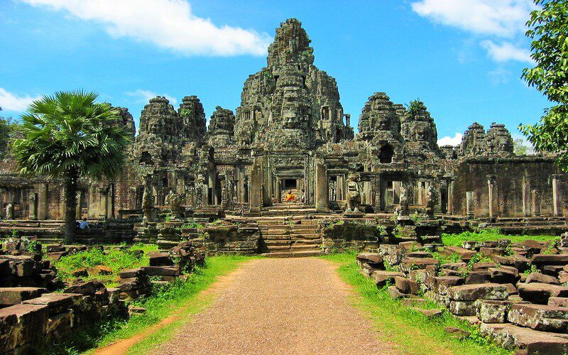

History of Angkor Thom
Angkor Thom, meaning "Great City," was the last capital of the Khmer Empire. It was established in the late 12th century by King Jayavarman VII. The city is known for its impressive architecture, including the Bayon temple at its center, famous for its large stone faces.
Angkor Thom was not just a political and cultural center but also a symbol of the empire's wealth and power. The city is surrounded by a moat and high walls, with five monumental gates, each decorated with stone carvings of elephants and gods.
The city remained the capital until the fall of the Khmer Empire in the 15th century. Today, Angkor Thom is one of the most popular tourist attractions in Cambodia, drawing visitors from around the world to explore its historical and cultural significance.